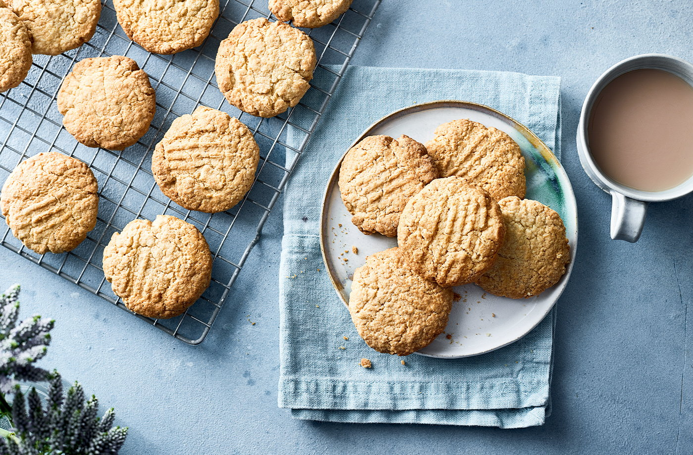

Brown butter biscuits

Description
Browning the butter before making the dough helps give a rich, nutty taste to these simple, easy biscuits.
What's more, they're super cheap and great with a cup of tea – what's not to like?
Ingredients
- 125g unsalted butter
- 125g caster sugar
- 1 large egg
- 1 tsp vanilla extract
- 250g self-raising flour
Steps
- Preheat the oven to gas 4, 180°C, fan 160°C. Melt the butter in a pan over a medium heat, then heat for 3-5 mins until the surface is all foamy; remove from the heat. When the foam subsides, the butter should be a light, mid-brown colour.
- Allow to cool for 5 mins, then mix in the sugar. Transfer to a mixing bowl and leave to cool for 10-15 mins until just lukewarm. Add the egg and vanilla extract; mix well. Stir in the flour and a pinch of salt to make a smooth dough.
- Roll into walnut-sized balls and arrange on 2 lined baking sheets, leaving room for them to spread. Press gently with a fork; bake for 12-14 mins until golden. Cool on the baking sheet for 10 mins, then transfer to a rack to cool completely. Store in an airtight container for up to 3 days.